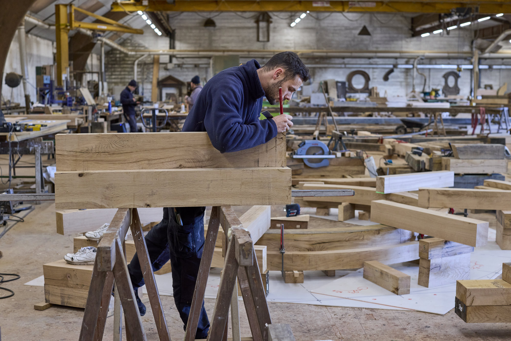
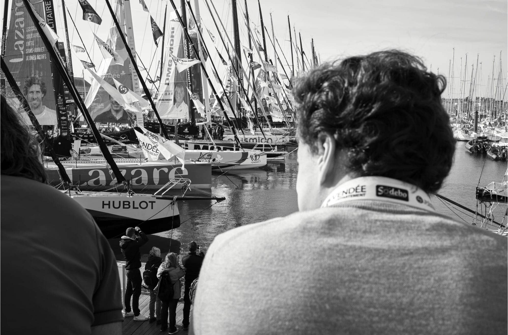
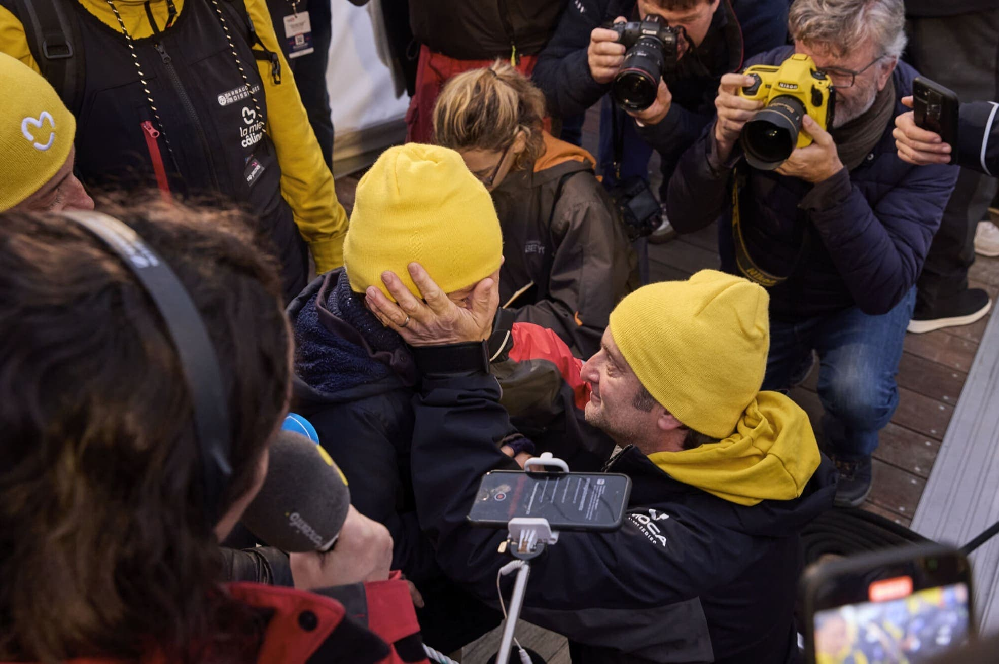
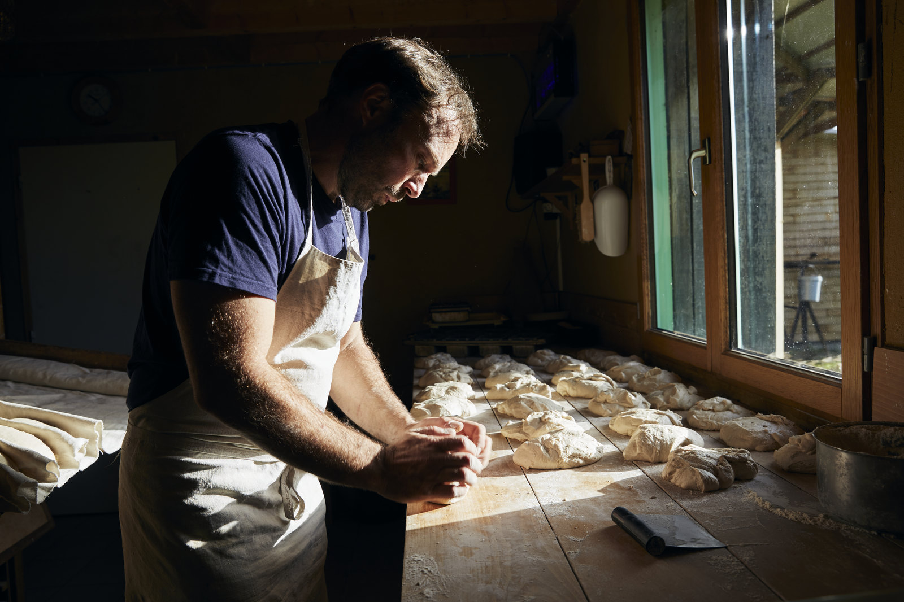
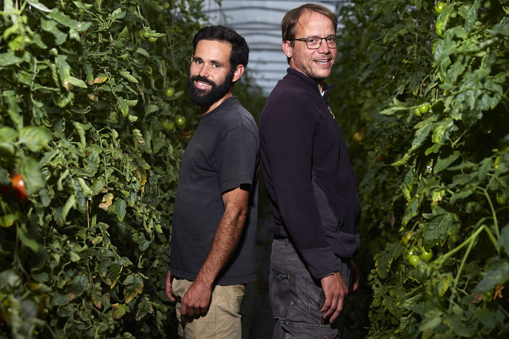
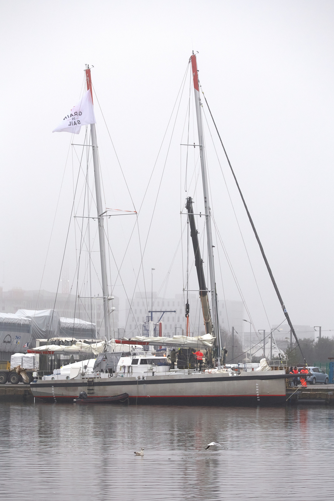
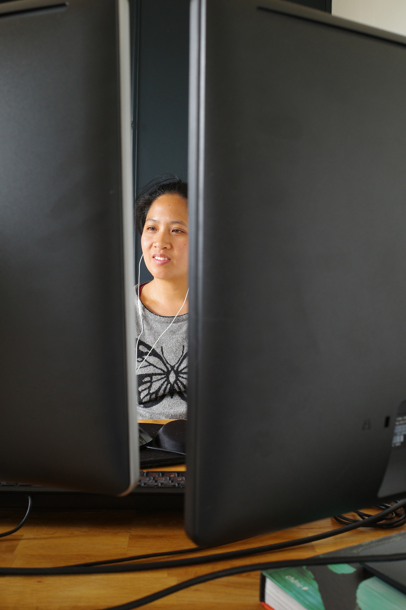

Toggle navigation
MATHIEU THOMASSET
PORTRAITS
ENTREPRISES
PRESSE & PUBLICATIONS
BLOG
CONTACT
/// 7 Mar 2026 ///
Photographe industriel en Vendée — Reportages d'usines et de chantiers
/// 6 Mar 2026 ///
Photographe corporate à Nantes — Portraits et reportages d'entreprise
/// 3 Mar 2026 ///
Valoriser son savoir-faire artisanal par la photo en Vendée

/// 15 Feb 2026 ///
Préparer un reportage photo en entreprise
/// 7 Jan 2026 ///
Portrait LinkedIn professionnel en Vendée
/// 21 May 2025 ///
Vendée Globe

/// 7 Dec 2024 ///
Portrait aux Ateliers Perrault
/// 10 Nov 2024 ///
Départ du Vendée Globe 2024

/// 9 Feb 2022 ///
Portrait à la ferme en Vendée
/// 16 Oct 2021 ///
Portrait de Rémi, éleveur et boulanger en Vendée

/// 11 Oct 2021 ///
Portrait d'Isabelle, éleveuse de vaches limousines en Vendée
/// 15 Sep 2021 ///
Portrait de Jérémie et Alexis, maraîchers en Vendée

/// 16 Aug 2021 ///
Portrait de Michel, saisonnier dans une ferme en Vendée
/// 12 Aug 2021 ///
Portrait de Paul, éleveur de porc en Vendée
/// 26 Feb 2021 ///
Grain de Sail

/// 2 Apr 2020 ///
Journal de confinement

/// 17 Feb 2020 ///
Portrait du sénateur Bruno Retailleau pour le JDD
/// 4 Jan 2020 ///
Portrait en triptyque
/// 11 Nov 2019 ///
Dragon des mers
/// 8 Aug 2019 ///
Où est la Justice ?
/// 19 Feb 2019 ///
Nouveau MiN de Nantes
/// 14 Jun 2018 ///
A l'Abattoir
/// 18 May 2018 ///
Les foulées du Gois
/// 19 Dec 2017 ///
Un chantier XXL
/// 27 Oct 2016 ///
Les indignés de McDonald's
/// 22 Jul 2016 ///
Les rencontres d'Arles 2016
/// 27 May 2016 ///
Manifestation contre la loi travail